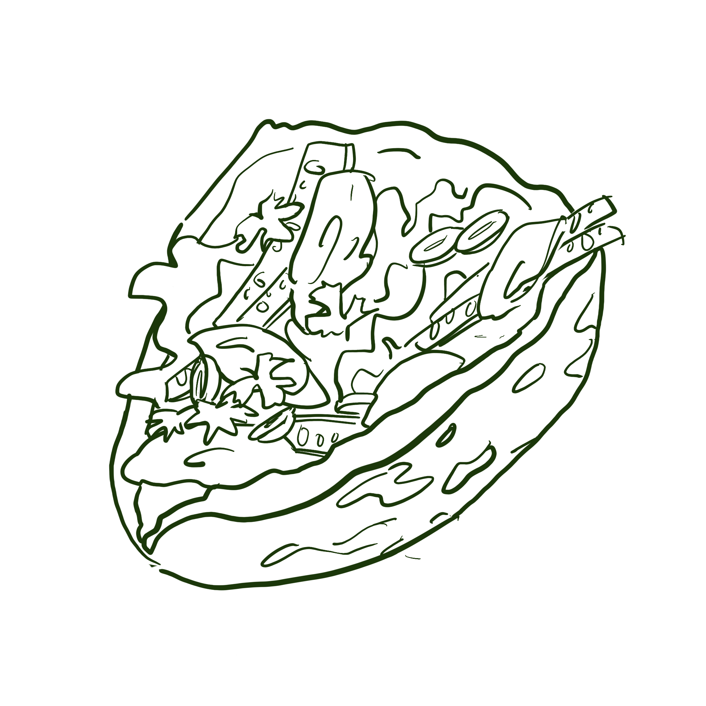
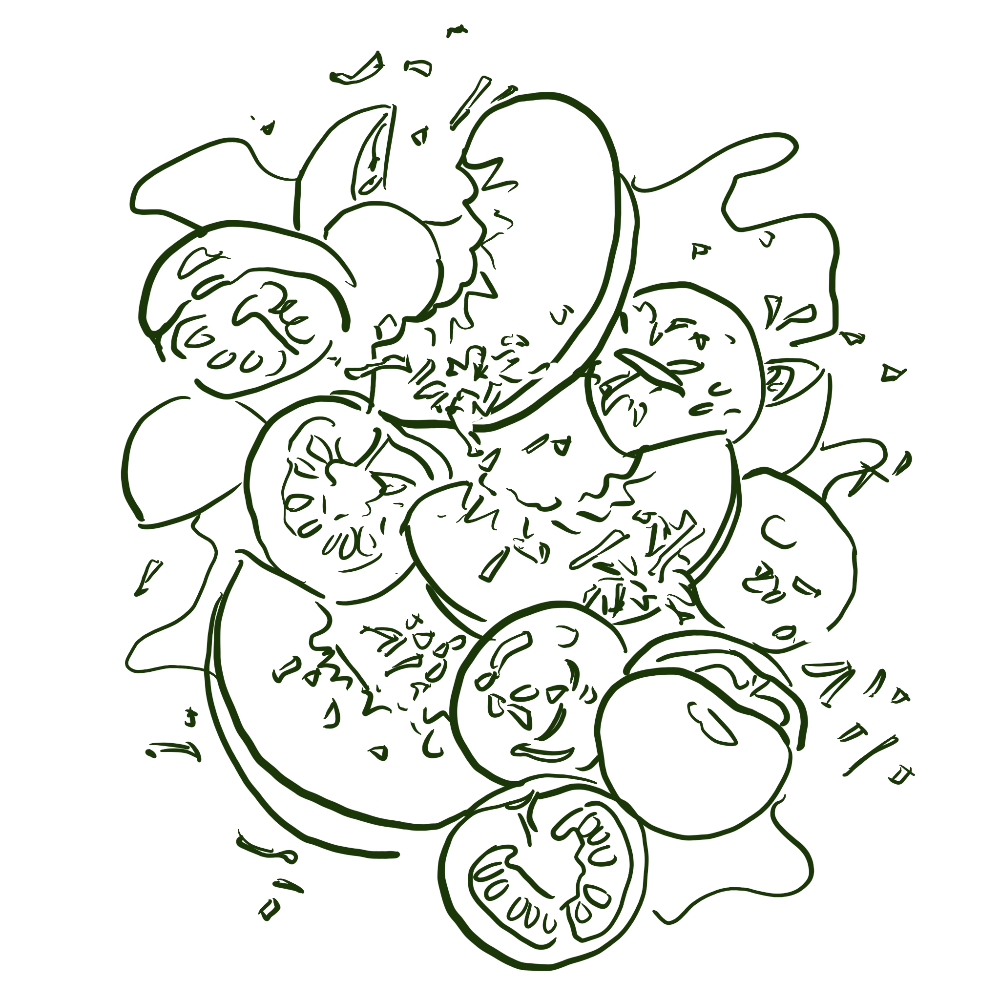
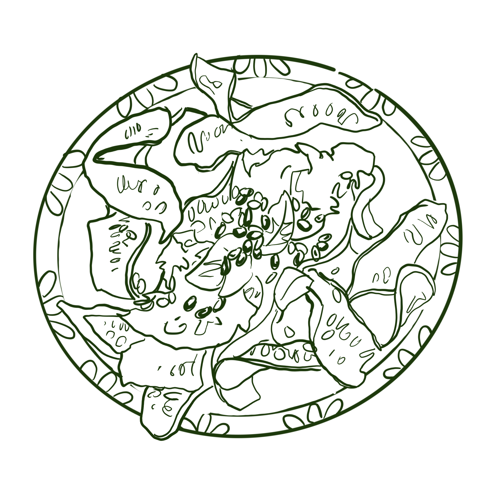
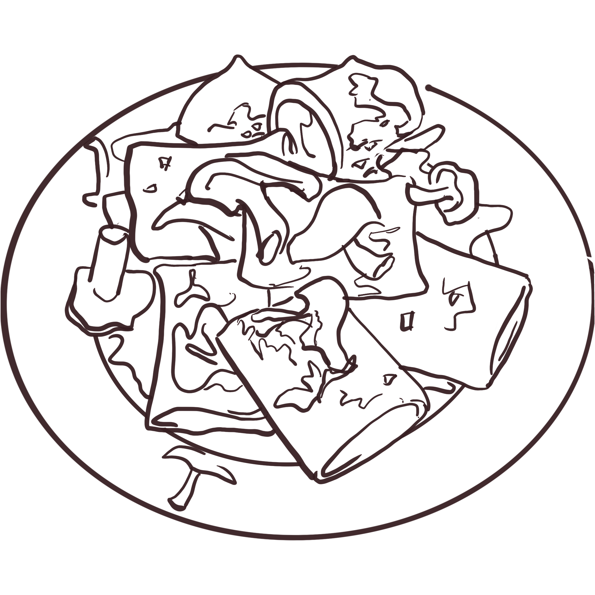
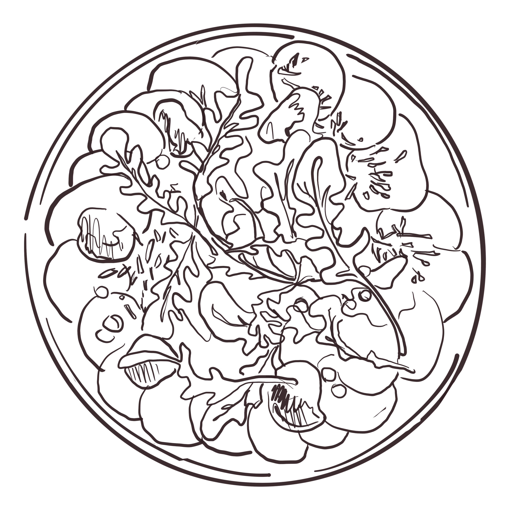
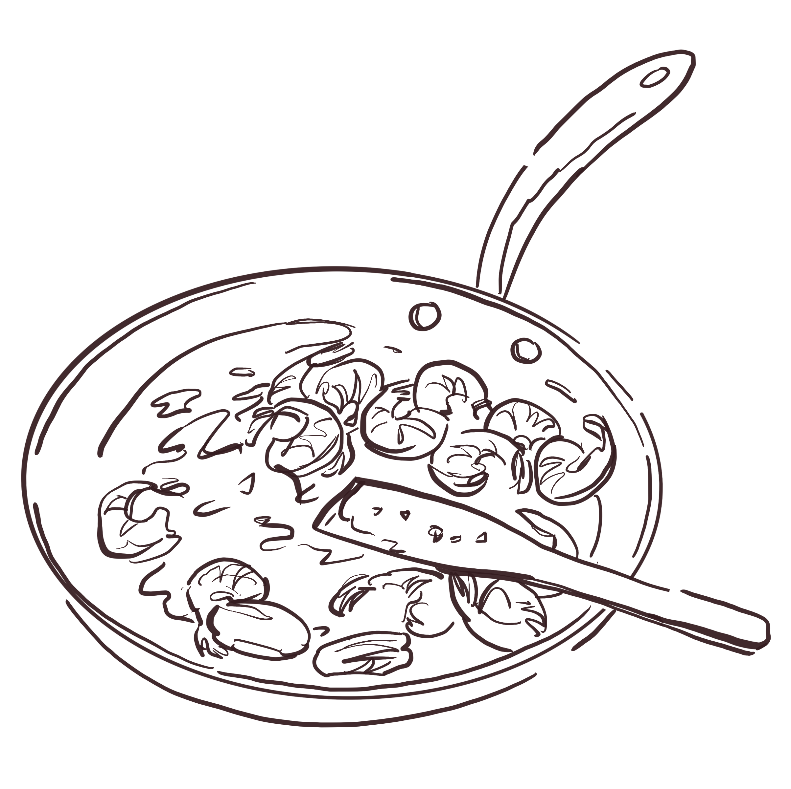

Mijn recepten
Filter of zoek door de recepten
komkommer
edamame
koriander
pinda
ui
chili
soyasaus
pasta
rundsvlees
tomaat
look
wortel
selder
parmezaan
pitta
kip
limoen
sriracha
yoghurt
perzik
basilicum
courgette
habanero
olijfolie
citroen
fris
comfort
weeknight
spicy
feest
brunch
vegan
vegetarisch
pescetarisch
glutenvrij
lactosevrij
omnivoor
≤ 15 min
≤ 30 min
≤ 45 min
≤ 60 min
≤ 120 min
Geen recepten gevonden. Pas je filters aan of wis de zoekopdracht.
Komkommer–edamame salade
Pasta ragù

Pitta kip met pindasaus

Tomaat–perzik salade

Courgette–habanero–look

Miso–champignon pasta

Rode biet tonato

Scampi’s in kerstomaten–puntpaprikasaus